Well, we don’t know for sure it was a pet. Don’t you know. It obviously wasn’t well domesticated. That’s for certain.
Well, let me tell you. What do you do when your world is turned upside down? What do you do when you learn that the “Easter Bunny”, “Santa Claus” and the “Tooth Faerie” don’t really exist? Yeah, well, most people put up a fuss and then deny the facts. They don’t want to move away from their cherished beliefs.
And thus we have OOPARTs. Things that should not occur if the accepted “mainstream” narratives are correct.
Depending on who you are, and your mental makeup, will determine how you react to an OOPART.
Low Intelligence / Stupid
Not particuliarly moronic or retarded, but fixed in afixed thinking patterns.
You will deny it, and come up with reasons why it is an easily explained everyday object, or situation.
Average Intelligence
Representative of 80% of the human race.
You will ignore it. It is not important to you and thus holds no meaning for you.
High Intelligence
Only a few “get it”.
You will accept it as it is, and observe it and search for clues to see if you can gleen or derive further hints about the secrets of life from it.
Here, in this article, we will look at the discovery of human remains found in Tyrannosaurus Rex dung.
Human bones in dinosaur feces
In 2017 it was announced, and quickly ridiculed, that dinosaur feces containing bone fragments belonging to some of our early human ancestors were found in the fecal matters of a Tyrannosaurus Rex. My guess is that the human didn’t quite agree with the Dino and so with the acid reflux and stomach ache, the dinosaur shit the remains out in an explosion of gluey mess.
I guess, “road kill” isn’t exactly the right words for raw human. Too crunchy and with too much tough grizzle.
Paleoscatologist Karen Chen has discovered human bones in coprolites (fossilized excrement).
I guess that it didn’t help any that she was Chinese. In 2017, Donald Trump and Mike Pompeo and crew were active in demonizing everything to do with China. This included human remains in dinosaur excrement.
Now, what she found was human remains. What is curious about them is that they were found INSIDE of dinosaur shit. These are, 100% human bone fragments found inside the fossilized Tyrannosaurus dung.
Because of the obvious sensationalism of such a discovery, varieties of tests were performed to determine the nature of the bones. In all cases the conclusion was unmistakable. A dinosaur; specifically a Tyrannosaurus Rex, gobbled down a proto-human whole, and then after a suitable period of time, shit him / her out.
Let’s face the realiy.
It is absolutely clear that the analysis of the fragments produced absolutely unexpected results, as the bones turned out to be of human (or proto-human) origin.
“I never expected anything like this. The fragments of bones turned out to be a part of a phalanx bone from the hand of an hominin, and the smaller ones are parts of a jaw bone. They appear to be from a specimen of Homo erectus or humanoid. That’s just unbelievable! ” -Professor Chin
Scientists are shocked by her discovery, since non-avian dinosaurs are widely believed to have gone extinct more than 60 million years before the appearance of the first hominin.
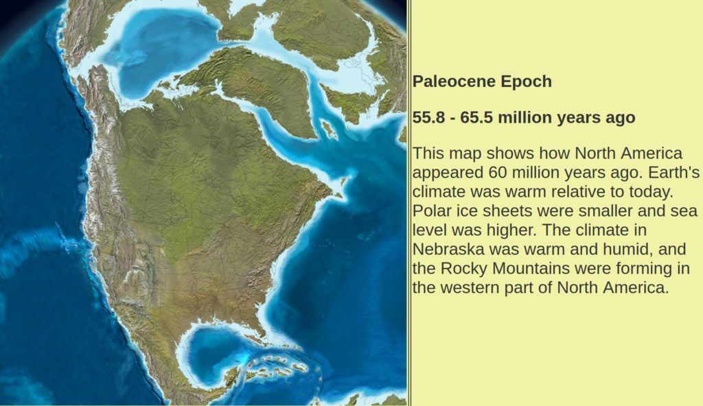
The dating analysis has dated both the dung and the bones at approximately 1.8 million years, suggesting that some dinosaurs actually survived the Cretaceous–Paleogene extinction event.
“It proves that all non-avian dinosaurs did not disappear 60 million years ago. Our ancestors were actually preyed upon by some surviving dinosaurs!” – Professor Chin.
Many other paleontologists have criticized Professor Chin’s conclusions, claiming that her results were simply impossible. Everyone knows, they argue, that dinosaurs died off long before the first humans walked about and started to raise families.
Everyone knows.
However, aside from their scofflaws, not one of the other criticizing “experts” was able to provide answers or solutions to dispute the presence of a humanoid phalanx bone in the dung of a dinosaur.
Ah. Now I fully expect these artifacts, and the discovery to be “misplaced” in some dusty old archive, and lost in some long forgotten tome. They don’t, don’t you know, fit the established narrative that those in power have based their entire careers upon. And careers equate to money. And no one is going to risk their fine revenue stream to go against the all-mighty dollar.
Tyrannosaurus Rex
Tyrannosaurus rex was one of the most ferocious predators to ever walk the Earth. With a massive body, sharp teeth, and jaws so powerful they could crush a car, this famous carnivore dominated the forested river valleys in western North America during the late Cretaceous period, 68 million years ago.
Although T. rex is a household name, what we know about this tyrannosaur is constantly evolving. Improved technologies, such as biomechanical modeling and x-ray imaging, have allowed scientists to gain a deeper understanding of how this apex predator lived.
Tyrannosaurus rex was also adept at finding its prey thanks to a keen sense of smell. While scientists have known for a while that this dinosaur devoted large portions of its brain to processing smell, studies have recently revealed that T. rex had almost as many genes encoding its olfactory receptors as a house cat does today. This powerful snout also likely helped T. rex find mates and detect other predators.
Weaknesses
Not everything about Tyrannosaurus rex was fierce, however. This dinosaur had unexpectedly puny arms, and the function of these little limbs is a source of debate among scientists. Some believe the animal’s arms were an evolutionary leftover—like the pelvic bones of a snake—or served non-predatory purposes like helping it grip a mate. Others argue that T. rex’s arms may have been adapted for “vicious slashing” at close quarters, given their ability to inflict deep wounds with four-inch claws.
And while they had strong thighs, these dinosaurs were not speedy. They could only walk briskly at up to 12 miles an hour—likely not fast enough to chase a speeding Jeep, as depicted in the movie Jurassic Park. Using biomechanical models, scientists have theorized that if these heavy animals moved any faster, they would have shattered the bones in their feet.
Growth spurts and extinction
Tyrannosaurus rex had a life expectancy of about 28 years. Previous studies have suggested that it went through a growth spurt in its teenage years, but until recently, scientists didn’t know much about how it grew from a hatchling to a powerful predator.
In January 2020, a study of the fossils of Nanotyrannus—a smaller tyrannosaur that was believed to have lived alongside T. rex—revealed that the bones were more likely from a juvenile T. rex than another species. If so, the study then suggests that Tyrannosaurus rex’s growth rate varied as it aged, and it could slow down its growth when food was scarce, a major evolutionary advantage.
In spite of all its advantages, T. rex was no match for the mass extinction event that claimed three quarters of life on Earth 66 million years ago. This cataclysm occurred when an asteroid or comet the size of a mountain slammed into Earth, (supposedly) wiping out Tyrannosaurus rex along with the rest of the non-avian dinosaurs and bringing a sudden end to the Cretaceous period.
Strengths
Tyrannosaurus rex, whose name means “king of the tyrant lizards,” was built to rule. This dinosaur’s muscular body stretched as long as 40 feet—about the size of a school bus—from its snout to the tip of its powerful tail. Weighing up to eight tons, T. rex stomped headfirst across its territory on two strong legs. These dinosaurs likely preyed on living animals and scavenged carcasses—and sometimes they even ate one another.
The head of a T. rex was the real stuff of nightmares. This fierce carnivore was optimally built for crunching through its meals, with a stiff skull that allowed it to channel all the force of its muscles into one bite—delivering up to six tons of pressure. This dinosaur used its 60 serrated teeth, each about eight inches long, to pierce and grip flesh, throwing prey into the air and swallowing it whole. To keep itself from overheating while crushing prey with its mighty jaws, the giant animal had vents in its head to help its brain stay cool, similar to those found in alligators.
Yikes!
Proto-humans
Now, the big problem that everyone has is that roughly 60 million years are supposed to separate the “age of the dinosaurs” and “the rise of man”. Statists have pronounced that humans evolved to what they are today, and the earliest proto-humans did not come into being until after the primates.
The earliest primates date from 56 million years ago. And thus, according to the “experts” these proto-monkeys came into being millions of years after the dinosaurs became extinct.
So the big problem is this…
- Maybe the dinosaurs did not die off 60 million years ago.
- Maybe the proto-monkeys, proto-humans or humans are older than we assume.
- Maybe dinosaurs and humans or proto-humans did actually coexist.
- Maybe a time machine brought the two species together.
- Maybe a space vehicle brought humans to dinosaurs together.
- Or, perhaps the theory of evolution is incorrect with dinosaurs and humans.
Maybe we all coexisted in some sort of peace…
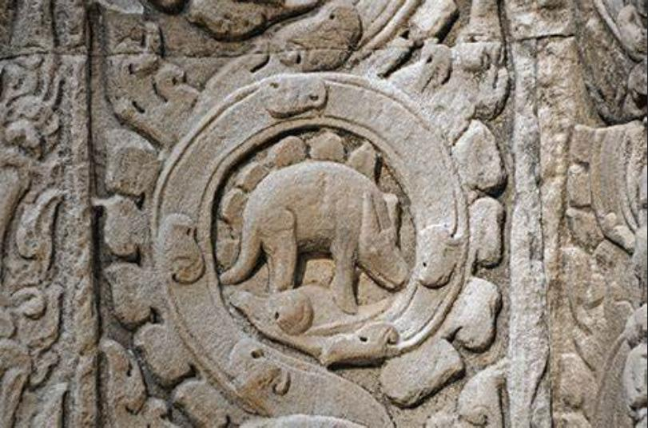
Evidence of coexistence
Now, if this was all there was… well, maybe we could just shrug our shoulders and forget about it. But there is quite a bit of evidence that is suggestive of dinosaur and human coexistence.
Bishop Bell’s Behemoths
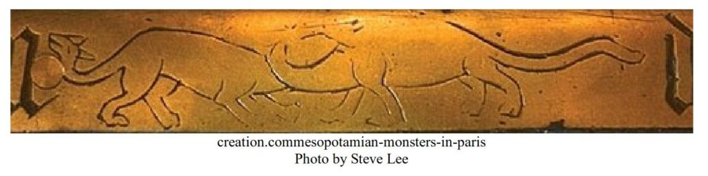
This brass engraving was made over 500 years ago, and decorates Bishop Bell’s tomb in England. The two animals depicted are very unambiguous sauropods, but were probably known to the locals of the time as dragons. The animal on the left has a tail that ends in a spiked club, just like the sauropod Shunosaurus. It’s fascinating to consider that these dinosaurs were probably roaming the hillsides of Medieval England!
Utah Petroglyph
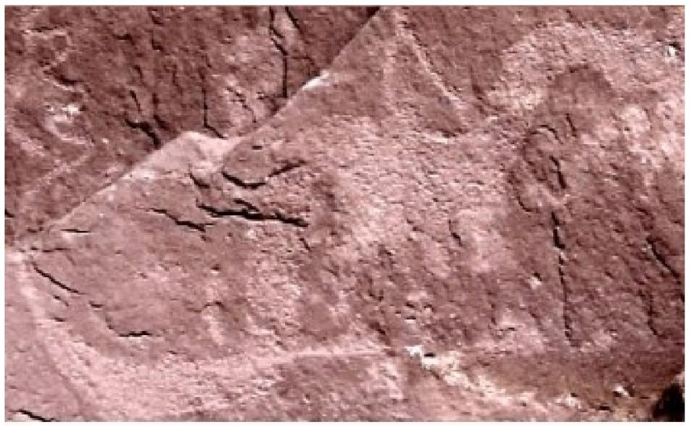
In Utah there is a rock formation known as Kachina Bridge. Underneath the arch is a Native American Indian petroglyph that greatly resembles a sauropod dinosaur. Even Phil Senter, author of a widely–circulated study that tried to refute the dinosaur interpretation, admits that it “really does look like a
dino“.
It should be noted that his study has been heavily criticized for bad science by both proponents and skeptics of the dinosaur interpretation alike; Vance Nelson has extensively debunked the proposed refutation by highlighting its poor methodology.
Granby Idol
In 1920, an interesting stone was unearthed by a Colorado rancher. It was a foot and a half long and a foot wide, portraying a smiling face, a woolly mammoth and a sauropod dinosaur. After seeing the 66– pound stone firsthand in 1923, archaeologist Jean Allard Jeancon proclaimed:
"If this stone can be proven genuine, it is the biggest find in all anthropological research[...] I have never seen such remarkable outlines of dinosaurs and mastodons!"
After being displayed on the rancher’s porch for six years as a local novelty, it was sold to a man named Henry McKnight for the price of $300, or about four grand in today’s dollars after being adjusted for inflation. It was supposedly to be given to the Smithsonian Museum, but it’s never been seen since.
Fortunately, a teacher came forward four decades later and revealed that she possessed photos of the stone taken before it’s mysterious disappearance. These reconstructions of the stone are based on her pictuures.
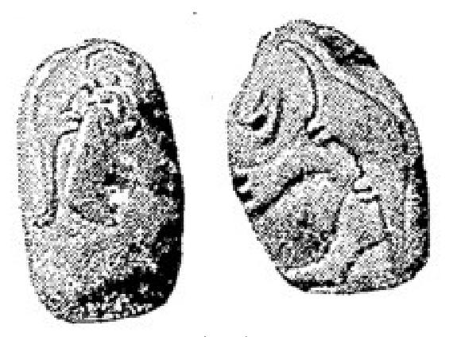
Chinese Ceratopsian
Perhaps as far back as 2,000 B.C., a people known as the Hongshan occupied the land now called China. This jade sculpture is a relic of this ancient culture. Compared with a modern portrayal of Triceratops‘ cousin, Montanoceratops, one is compelled to conclude the ancient Chinese saw living dinosaurs.
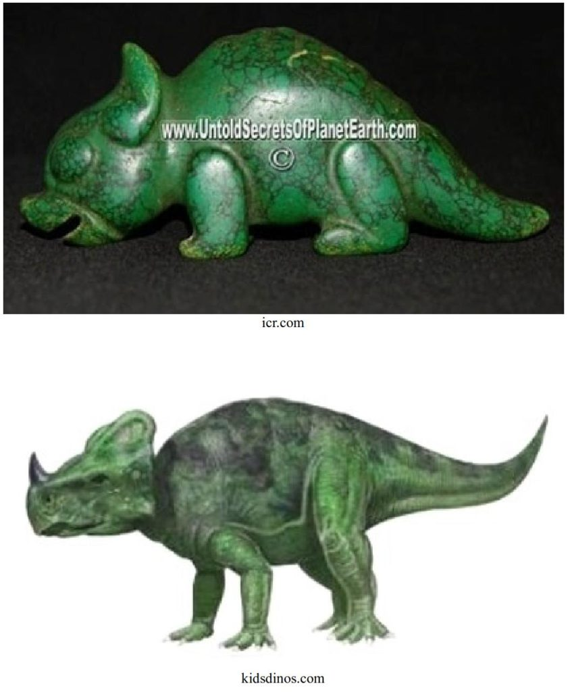
Of course, objections are expected regarding its authenticity. It’s been argued that it’s a recent creation, citing the market for Hongshan jade figurines. But even if it were granted that this were a forgery contrived to meet a high demand, the implication is that it’s still a modern duplicate of a genuine Hongshan sculpture.
Thus, the case for dinosaurs roaming ancient China with man would not suffer at
all.
As it turns out, though, the artifact is not a forgery. It’s authenticity has been verified by an expert third–party. The feeble argument that it actually represents a pig is soundly refuted by the existence of other Hongshan carvings which actually look like pigs.
Crocodile–Leopard
Around 100 B.C. the Nile Mosaic of Palestrina was created. It depicts many familiar animals with Greek labels, including the crocodile, giraffe, hippo, monkey, lizard, and turtle. The identification of the animal shown in this close–up is the subject of much controversy because it is difficult to identify with any extant creature. It has been suggested that the animal may be an otter. This is not
plausible, however, since the same mosaic elsewhere depicts a pair of animals explicitly labeled as otters!
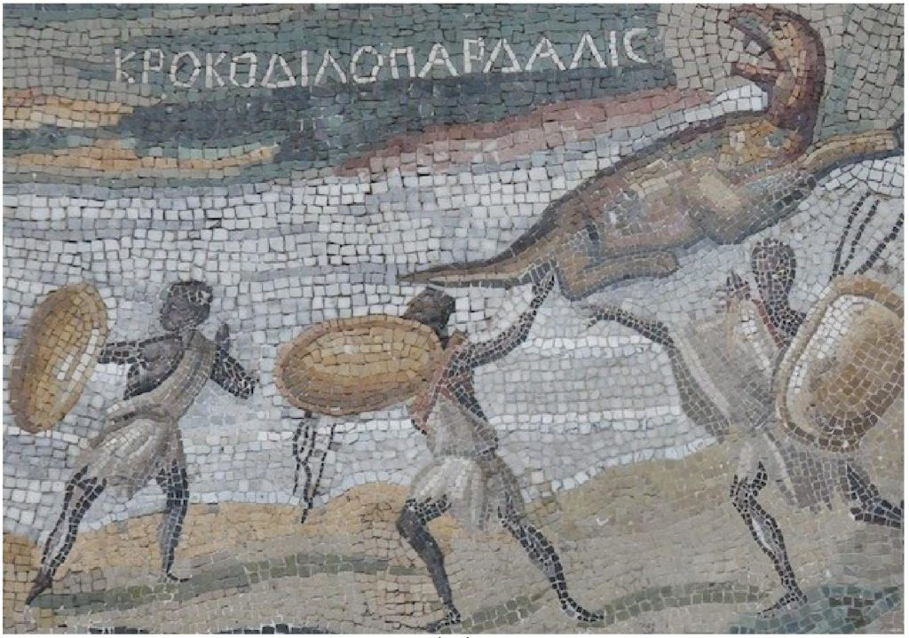
The Greek label for this animal reads crocodile–leopard. This unfamiliar term may be the key to identifying the mysterious creature. The ancient Greek word for giraffe was camel–leopard, referencing the giraffe’s camel–like morphology and leopard–like color pattern. Why would the animal in the mosaic be called a crocodile–leopard? The leopard part of the name is obviously not due to its color
pattern. It can be concluded that the animal shared some mixture of both eptilian and mammalian traits.
No animal alive today that resembles the crocodile–leopard could be accurately described as a mixture of both reptile and mammal, but there is an extinct group of organisms which definitely can. They are literally called mammal–like reptiles! The identification of this animal may finally be solved, notwithstanding the evolutionary assertion that all mammal–like reptiles went extinct millions of years before the mosaic was created.
The graphic below illustrates this point very convincingly. Note how the animal from the mosaic appears right at home among modern reconstructions of various mammal–like reptiles.
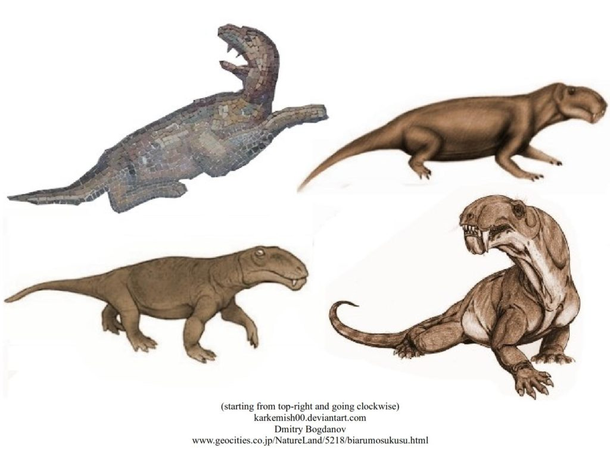
Pompeii Fresco
Around 70 A.D. this fresco was painted on the wall of a Pompeian doctor’s house. It depicts a Nilotic (Nile) scene, with pygmies interacting with some aquatic mammal and a couple of large reptiles.
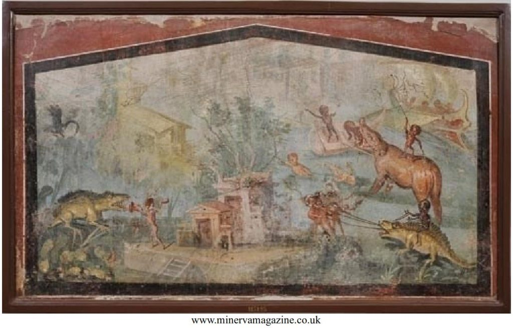
Here are a couple close–ups of the animals, with modern depictions of extinct creatures for comparison.
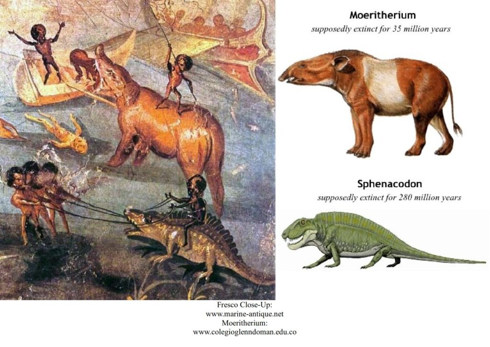
Note the mammal in the fresco and the modern moeritherium illustration both possess an elongated, fleshy snout. Consistent with modern interpretations of moeritherium remains, the animal in the frescoled a partially aquatic lifestyle. The reptile beneath strongly resembles the sphenacodon, likely a relative of dimetrodon, but with a smaller sail.
Critics of the moeritherium and sphenacodon interpretation have argued the fresco actually depicts a hippo and a crocodile. As evidence, they cite several related pieces of art which depict pygmies in similar scenarios interacting with hippos and stylized crocodiles. The insinuation is that the ‘sphenacodon‘ is a heavily stylized (or poorly drawn) crocodile. One obvious problem with this
argument is that crocodiles do not have a sail on their back, and artists don’t just accidentally draw sails on the backs of crocodiles. Even if it were to be argued that the reptile in the fresco doesn’t have a sail, but rows of spines that give the illusion of a sail, the fact remains that the short spines (if they could even be called that) on a crocodile’s back increase in length towards the end of the tail, while the exact opposite occurs with the fin–like structure on the creature in the painting.
A similar argument is put forth by skeptics for the animal identified here as a moeretherium; it’s claimed to be a stylized or incorrectly drawn hippo. However, it’s hard to imagine how the artist, if he indeed were intending to paint a hippo, could have gotten the anatomy so grossly incorrect. This holds true even if the artist were depicting a hippo based on word of mouth, and had never seen a real one before. The head of a hippo, along with its nose, are extremely broad and thick, and the same is true of its body. Also, a hippo’s legs are very short. In every aspect where the mammal of the fresco departs from resemblance to a hippo, it matches the moeretherium. The same goes for the reptile.
Chinese Dino 1500 A.D. painting
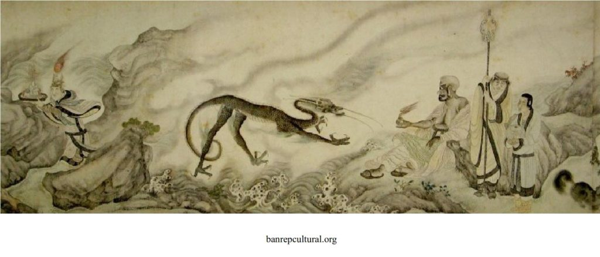
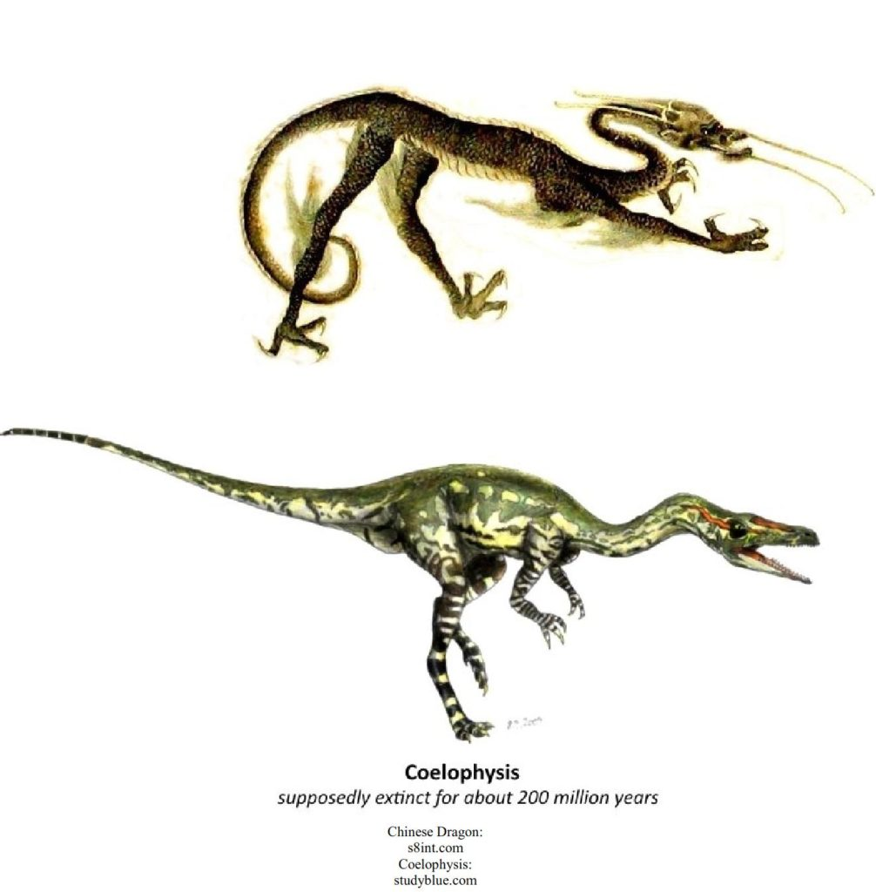
For example, Carnotaurus is likely a horned relative of T. Rex:
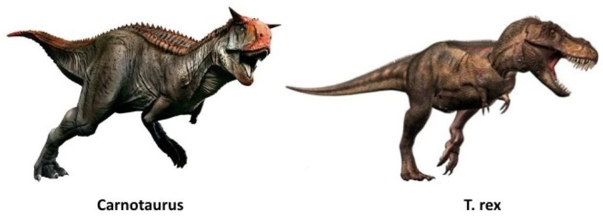
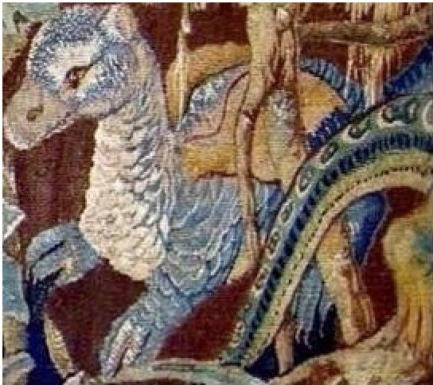
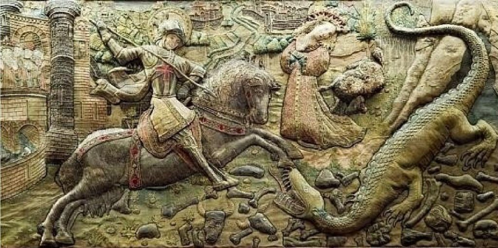
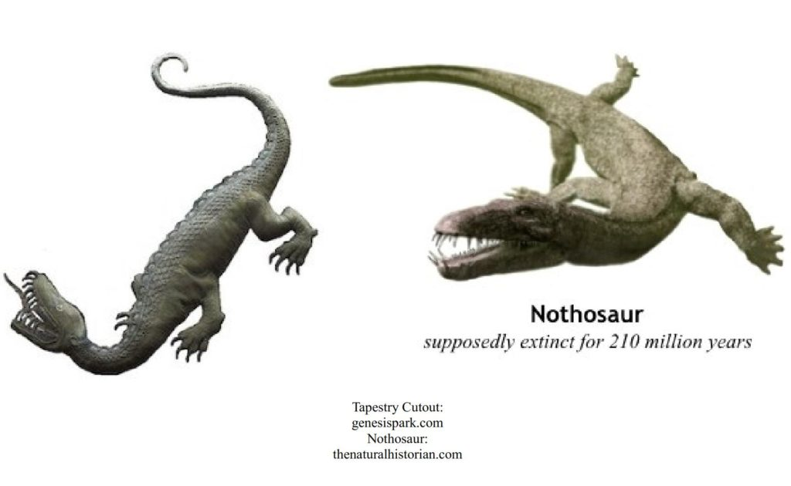
Father Crespi
I am going to devote an entire aritcle on Father Crespi and his collection of old artefacts and artwork later on. But this picture below will give one time to pause and reflect.
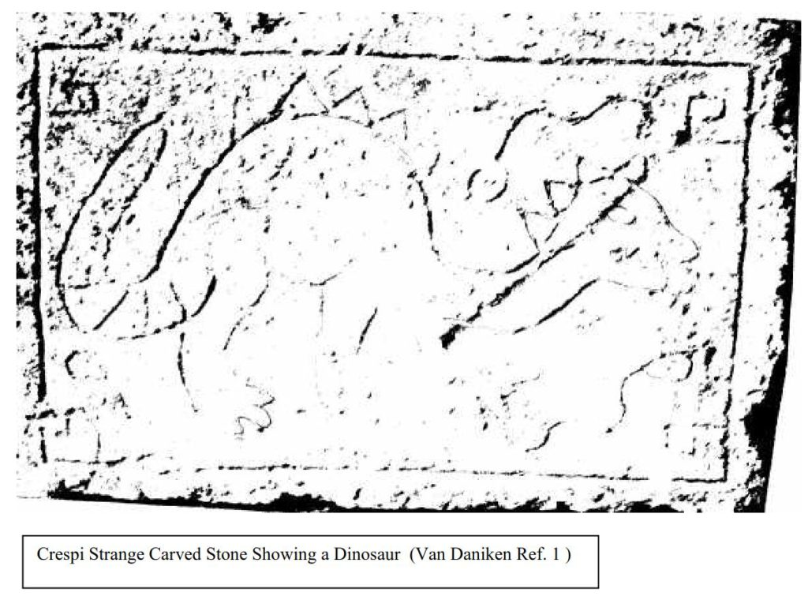
From HERE.
Born in 1891 in Italy, Father Carlos Crespi Croci was a Salesian Monk that spent his career in Cuenca, Ecuador from 1923 to 1982. At the University of Milan, he studied anthropology before becoming a priest. His many talents included being an educator, anthropologist, botanist, artist, explorer, cinematographer, humanitarian, as well as a musician. The kindness and benevolence he taught his congregation was such that they rewarded him with a number of ancient artifacts. It is estimated that throughout his lengthy career, Father Crespi was given and/or purchased over 50,000 ancient artifacts. The items in particular that captured the fascination of the world were a number of plates and objects forged from gold with mysterious symbols and hieroglyphs. The villagers told Father Crespi that many of the artifacts were found inside a cave known as the Tayos Cave. In the early 1970s, Erich Von Daniken published The Gold of the Gods in which he highlighted many of Father Crespi’s artifacts. Von Daniken made the claim that the collection included metal books showing proof that a lost civilization existed in ancient times that extraterrestrials helped to form. Many people fed into the belief that these artifacts were either extraterrestrial or were “out of place” with bizarre unknown scripts similar to Babylonian or Sumerian writing. With the Vatican’s permission, Father Crespi opened a museum at the Salesian School at Cuenca. In July 1962, a fire broke out and the museum was destroyed. Father Crespi was able to salvage as much as possible and stored them in two long, narrow rooms. Items from Father Crespi’s collection included tablets, plates, doors, decorations, statues, pottery, jewelry, ancient weapons and war adornments. There were even three gold sarcophagus-like coffins. The artifacts were made of stone, wood, ceramic and metal. The metals were pure gold, sheet-gold, pure silver, sheet-silver, bronze, brass, copper, zinc, tin and sheet metal. When Father Crespi passed away in 1982 what happened next only added to the mystery. His collection was removed. Investigators later discovered that it was purchased by the Central Bank of Ecuador and is currently stored in their museum vaults; however, none of the golden plates were shown to investigators, so it assumed they are lost. Others believe that either the Vatican has them, the local Government, or another rumor is that they were melted down and used for military funds. All that remains is the photographic evidence. Some people believe that the collection either never existed or was a fake. The truth is that there is a golden plate within Father Crespi’s collection that has been overlooked but is undeniable proof that the origins of the plate are absolutely regional. The plate was not created or influenced by extraterrestrials or other cultures outside of Mesoamerica. Finally, after all of this time a connection has been made between the Crespi Gold Collection and the Mayan hieroglyphs. The Mayan Empire was located in what is now Guatemala. Its greatest influence was reached in the Sixth Century A.D. The Maya had advanced knowledge of architecture, agriculture, art, calendar-making, math, pottery, and hieroglyphic writing. For reasons not yet fully understood, most of the Maya deserted their cities by 900 A.D. To this day, historians argue over the reasons for the fall of the Mayan Empire. Why has it taken so long for this one plate to be recognized for what it is? The main reason perhaps is because the plate is never shown to be in the proper position. In order to be connected back to its native language, the plate needs to be in the position as shown in these images. Also, when the Spanish conquered Mesoamerica one of the goals was to eliminate the history of the indigenous peoples. By taking away their historical identity the Spanish succeeded in convincing the world that the Mesoamerica had no education or cultural value before the Spaniard’s arrival. In recent times however, archaeologists and anthropologists have gained a great understanding and respect for early Mesoamerican civilizations. We know today that many Mesoamerican cultures that existed in modern times were very advanced and modern researchers still struggle to decipher their architecture, artwork, and writing systems. Every glyph on this plate can be found in the key provided by Bishop Landa who was a part of later Spanish rule in Mesoamerica. There are mild variants between a couple of the glyphs on the gold plate and Bishop Landa’s key; however, it is widely known that the Maya often used many designs and variations for the same syllable or word. Is this to say that all of Father Crespi’s artifacts were Mayan in nature? That is doubtful. The plates appear to be a compilation of different scripts that more than likely existed throughout the region. Perhaps the Tayos Cave served as the ancient school for scribes as well as for the art of metallurgy. It is possible that the Mesoamerica people hid these valuable historical artifacts so that the Spaniards would not be able to confiscate them. It is uncanny how much of Bishop’s Landa’s key appears on the gold plate itself. Perhaps, there were some Spaniards who hid some of the gold away either because they recognized the historical value of the plates, or for greed with the intent to recover them later but never did. The last plausible explanation for such an accumulation of varied historical metal artifacts is that they were brought there by floodwaters. Central and South America are subject to monsoons so perhaps the caves are the lowest level point in the region in which floodwaters deposit various materials. Gold, being a heavy metal, will sink to the lowest level the first chance it gets. Copper and silver are also heavy metals. We will never know how they got there or where they went after Father Crespi passed away, but now, at least, there is a solid connection to the Mayan culture.
- The pdf here presents all the documented artifacts.
- Related Links
- Father Crespi
Comments and conclusions
The big lesson here is that we should look at things as they really are, and not as we want them to be.
And when money is involved, it trumps all. It becomes the driving force of all reason, and all truth. Such is the bane of America and the “West” today. But that need not be our collective future. By rejecting the financial motivators, we can see things as they are and accept them. It will be a great advantage for the earth human society and for our own personal advantages.
The evidence is clear that large dinosaur creatures coexisted with humans for centuries. That, perhaps, their demise was due to hunting by humans rather than by extinction via meteor. And while, the meteor did cause a complete extinction of many species, there is evidence that many species survived and were exposed to humans in many ways, and in many places.
I am confident that killing one brontosaurus would be enough food to feed a very hungry villiage. And you know, judging from the curious Sumarian carvings of scaled doglike creatures on leashes, kept as pets as well.
Maybe they were used as beasts of burden; or for mighty weapons platforms such as this…
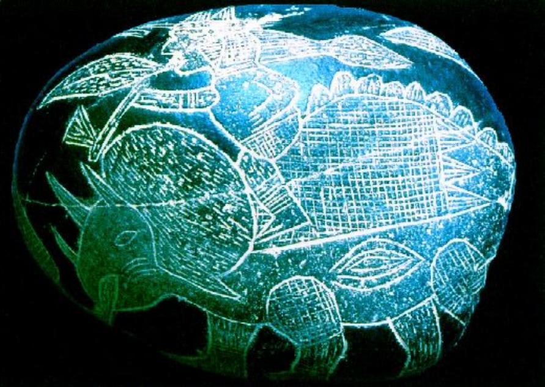
Or as this…
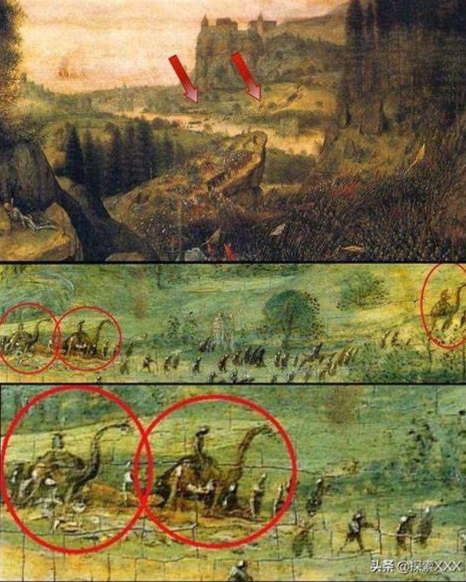
So, all in all, being eaten up by a hungry Tyrannosaurus Rex doesn’t seem all that unlikely at all. We need to open up our horizons and expand our minds. What we think about the past, the future and the present is more than likely, wrong.